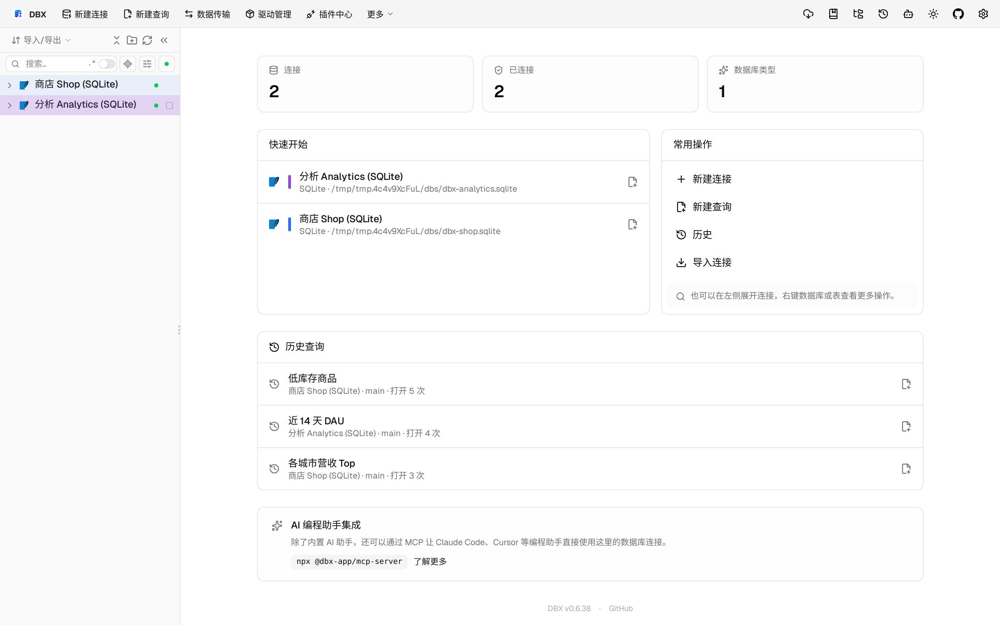
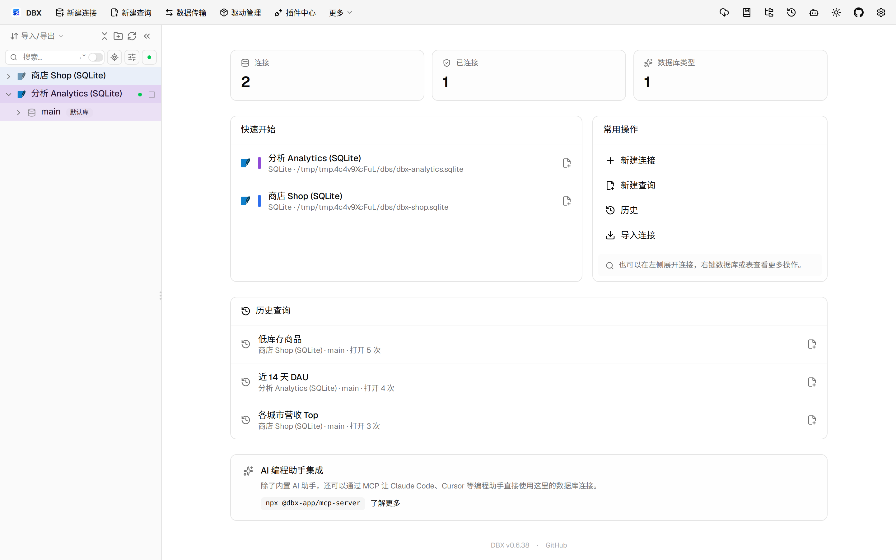

#11576 界面预览
commit 8fa0a49 · 回到 PR · 这个 PR 让 OceanBase Oracle 的对象浏览按数据库顺序分页加载，并在列表里透出对象有效状态；同时对象列表搜索在分页模式下不再支持正则，且显示“已加载多少个对象”的分页提示。另对权限失败的执行错误分类做了修正，普通无权限编译会更准确地显示为 SQL 权限错误。
⚠️ 这次录制有 9 步没能按计划执行；带 ⚠️ 的截图拍摄于步骤失败之后，画面未必是说明文字所描述的状态。
红线是鼠标走过的轨迹，红色圆环是一次点击；底部文字是这一步在做什么。多个场景各自从应用初始状态开始。空格暂停，← → 逐段查看。
 ⚠️ OceanBase 对象列表分页与有效状态 · 查看事件表分支已展开的左侧树
⚠️ OceanBase 对象列表分页与有效状态 · 查看事件表分支已展开的左侧树

⚠️ OceanBase 对象列表分页与有效状态 · 打开表后查看对象浏览区域
 ⚠️ 分页搜索与正则提示 · 对象浏览搜索框与列表初始状态
⚠️ 分页搜索与正则提示 · 对象浏览搜索框与列表初始状态

⚠️ 分页搜索与正则提示 · 查看分页搜索不支持正则时的提示